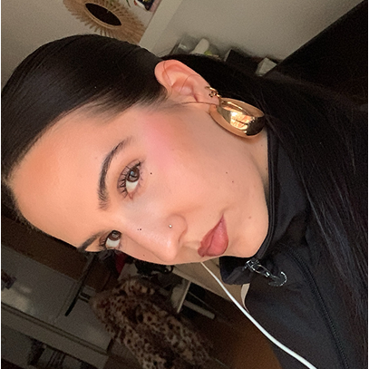

I'm Lilia Redero, a graphic design student passionate about aesthetics and communicating messages and feelings. Originally from Salamanca, and currently living in Madrid for my studies, my work is characterized by blending styles and creating contemporary designs. I work on visual identities, packaging, illustration, UX/UI, and more, combining simplicity and clean lines with well-reasoned decisions to ensure the design resonates with its target audience.